Capy Runner
(Diretor Geral & Diretor de Arte)

(Em processo de registro junto ao INPI)
Jogo de Plataforma 2D Pixel Art Educacional de Biologia onde uma Capivara ao ser sequestrada vaga pelo Brasil, nos 6 biomas, a procura de seu bando, encontrando no caminho toda a fauna, flora e cultura do nosso país.
Baixar:
Ichi.io
Unity C# (PC)
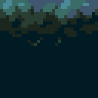
Plataforma 2D
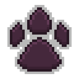
Pixel Art
Desafio
Ensinar Biologia para crianças e pré-adolescentes de uma forma divertida e lúdica.
LEVEL DESIGN
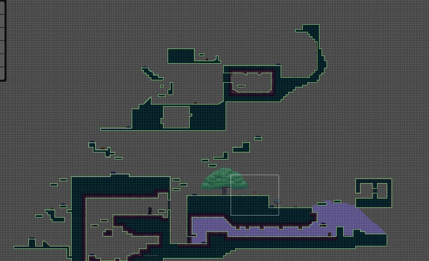 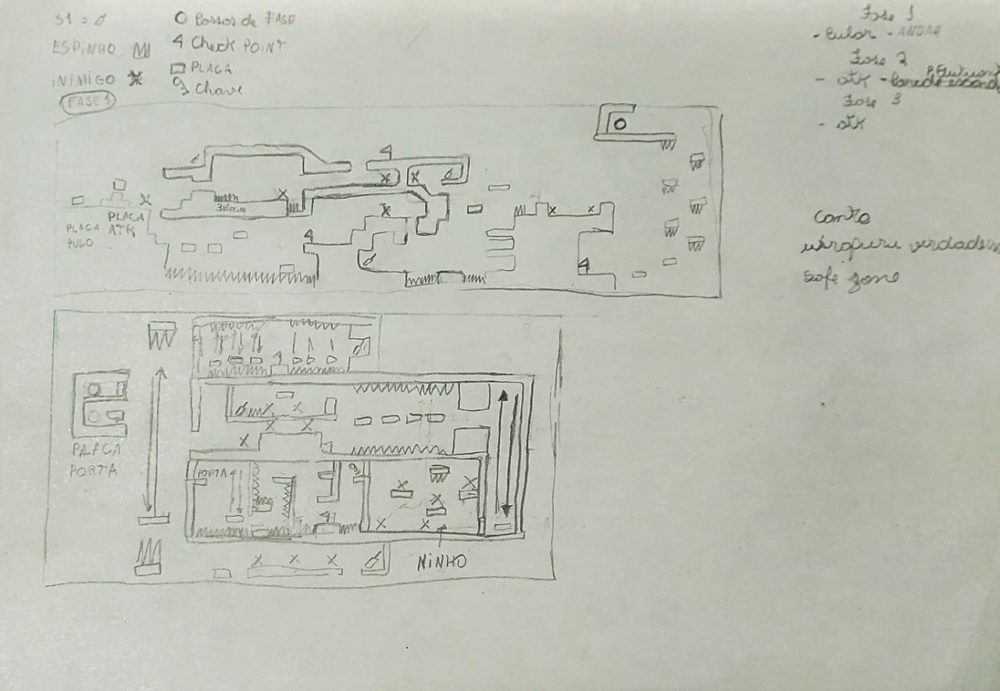Game design (Mecaânicas)
• Diálogo
• UI(Menu, Pause, Crédido)
• UX (Vida)
• Player
• Inimigos
• Diário de animais encontrados
• Paredes secretas
• Itens coletáveis e Missões
• Cutscene
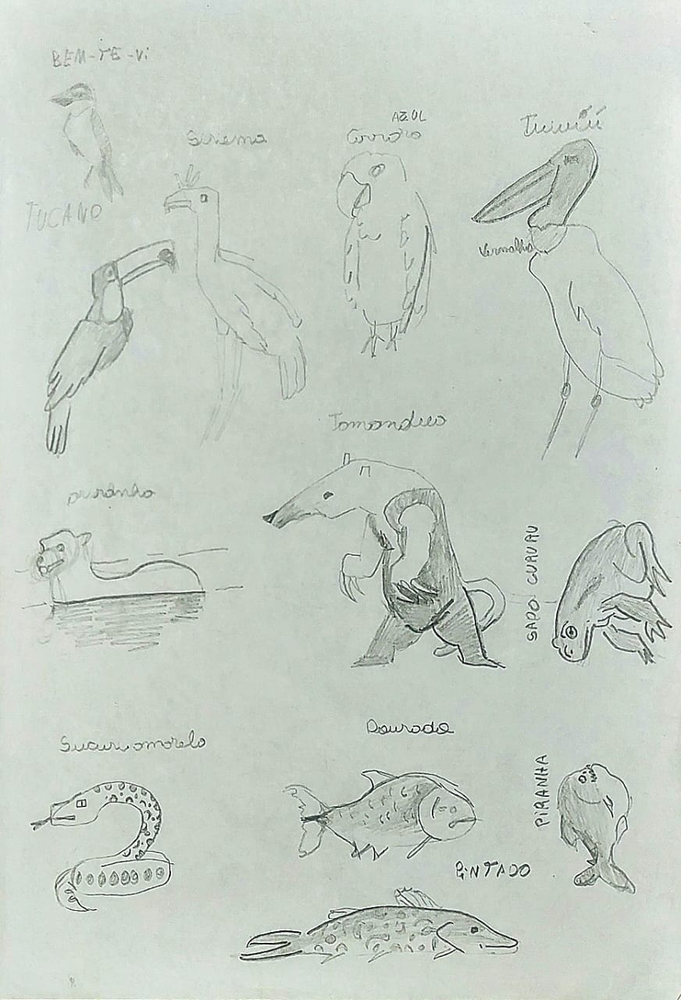
Montagem
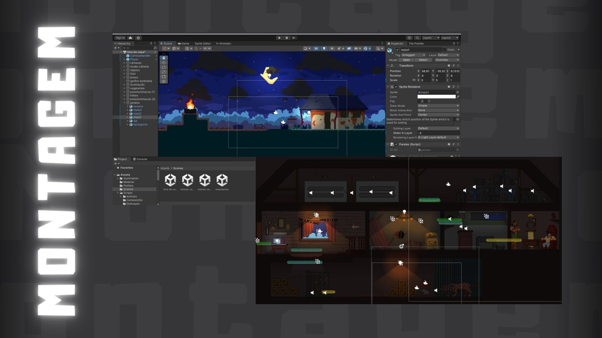

Utilizei a URP, Particle System e Shaders para a iluminação, folhas e movimentação das plantas


Cutscene
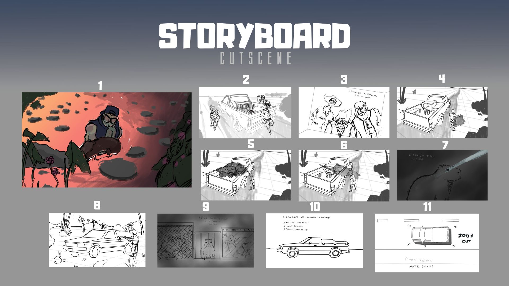Fizemos as animações no estilo animatic pelo curto prazo e equipe pequena, eu fiz os storyboard e dirigi o artista na finalização das ilustras.
Diário
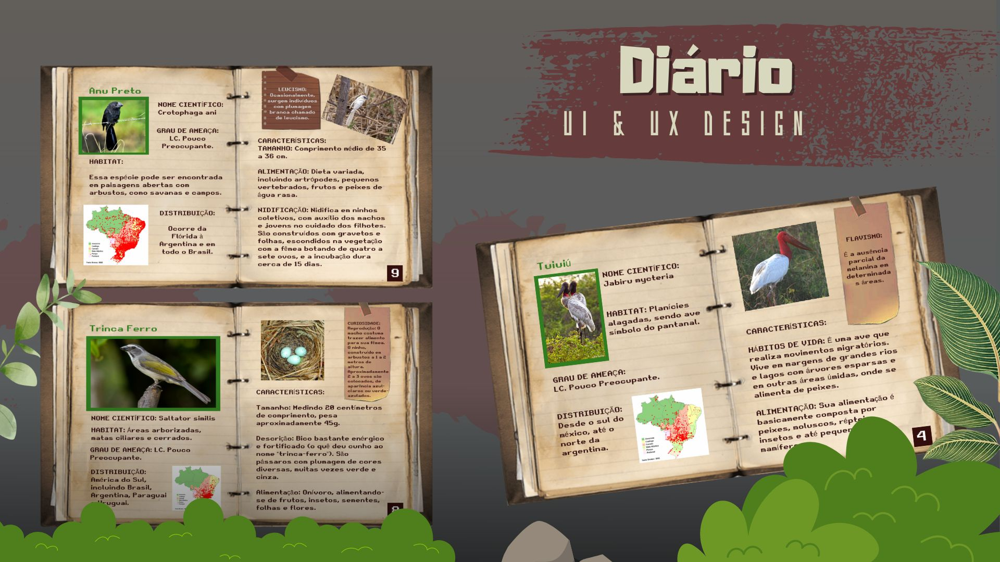
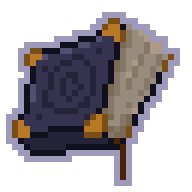
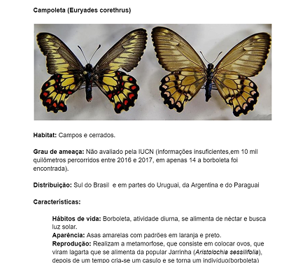
Ao fazer uma mecânica de registro de espécies no diário esperamos que as pessoas aprendam curiosidades sobre elas. Pelo fato de ter 19 espécies e ser uma extensa quantidade de informações, fizemos um documento imenso, de 25 páginas, verificado e aprovado pelo Doutor em Biologia Thiago Miguel
Icones Dialogo
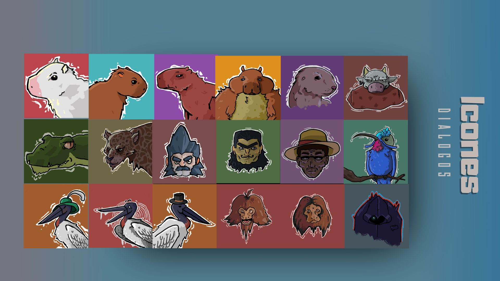Esbocei e ilustrei os icones de diálogos de cada um dos NPC’s do jogo.
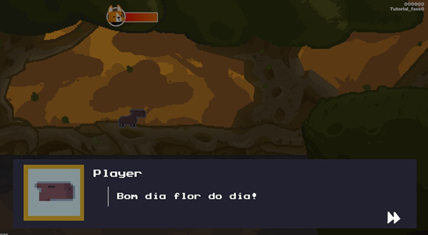© 2024 - Todos os direitos reservados